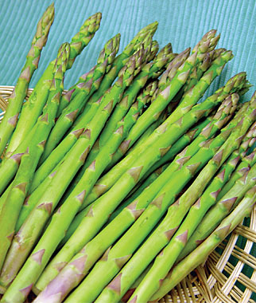

Plants
For Patio and small-scale gardening we recommend these plants to get you on your way to becoming a
gardening guru!
Just select from the options below and we'll find the plants that best suit your needs.
SELECT FILTERS HERE:
Asparagus |
 |
|
Seeds will take 2-3 years before maturing into crowns.Plant crowns (roots) 20-40cm apart and
a few cm deep in well manured soil. Recommended soil pH 6.5 - 7.5 The asparagus shoots grow
in spring. Harvest the shoots which are bigger than 1-2cm in diameter. Leave the rest to
grow into the leafy ferns (1.5m tall) which will feed the crowns to give a crop next year.
In autumn the ferns will be covered in bright red poisonous berries. Leave the ferns to die
down in autumn, then trim off the dead stalks and pile on plenty of rotted manure/compost to
give the roots plenty of food to produce new stems in spring.
Harvest by cutting off the stalk, close to the ground. From the second or third year you can
get an additional crop by letting the first lot of ferns grow, then bending down the stalks
to break them. A second crop of shoots will grow.
NOTE: The asparagus berries are poisonous.
|
|
Basil |
|
|
A frost tender low-growing herb. Basil is a culinary herb prominently featured in Italian
cuisine, and also plays a major role in the Southeast Asian cuisines of Thailand, Vietnam,
Cambodia, and Laos. The plant tastes somewhat like anise, with a strong, pungent sweet
smell. There are many varieties including, thai, purple ruffles and lemon.
Can be grown inside in pots in winter. As the plant develops, pinch out the top to encourage
bushy growth. Keep well picked to prevent flowering.
|
|
Lettuce |
|
|
Lettuce offer a range of shapes, sizes and colours but they are all easy to grow. Choose a
variety marked on the seed packet as suitable for the time of year as some do badly in the
very hot months. Try to provide some shade to prevent them 'bolting' to flower and seed in
the hottest months.
Sow in rows and use thinnings as small salad greens
Lettuce are shallow rooted so water daily in hot or dry weather to prevent bitter flavour.
and bolting.
|
|
Tomato |
|
|
There is nothing like the taste of a freshly picked tomato, warm from the sunshine. In the
smallest of gardens or even an apartment with a window-box, it is worth growing at least one
tomato plant for the pleasure it will give you. They will grow in pots, troughs or even
hanging baskets.
Tomatoes are frost tender and should be grown in shelter or under cover in cool climates.
Tomatoes need feeding. In a garden bed, compost and mulching will produce a crop from one or
two plants. In containers, use some suitable long term fertiliser pellets or feed regularly
when you water. Feeding also improves the flavour of the fruit.
There are many different varieties of tomatoes but they all have one of two growth habits.
Determinate:
Compact bush growth, stops at a specific height and useful for containers.
Indeterminate:
Will continue growing a main stem, or vine until stopped by frost. The majority of heirloom
tomatoes are indeterminate.
Both types need stakes to give them some support otherwise they will sprawl across the
garden.
Varieties include Acid-free, Bush, Tall, Cherry, Yellow and many others.
|
|